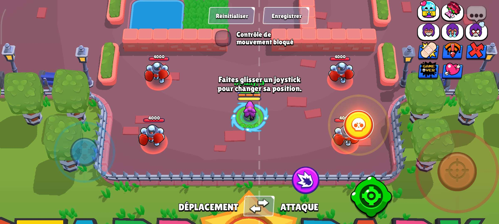

Brawl Stars est un jeu mobile développé par Supercell, combinant action, stratégie et coopération.
Ce jeu de tir en arène permet d'affronter d'autres joueurs en ligne dans divers modes de jeu dynamiques, allant du classique match à mort en équipe à des modes plus originaux comme le Braquage ou le Survivant (Battle Royale).
Chaque brawler possède des capacités uniques, incitant les joueurs à adapter leur stratégie en fonction de leur équipe et de l'adversaire.
Avec des mises à jour régulières, des événements spéciaux et un système de progression basé sur les trophées et la maîtrise des personnages, Brawl Stars offre une expérience compétitive et fun, idéale pour les amateurs de jeux multijoueurs rapides et tactiques.
Pour bien commencer, étudions l’interface utilisateur (UI) de Brawl Stars. Voici un aperçu des boutons présents à l’écran.

- Dans la partie gauche de l'écran :
- Un joystick de déplacement, permettant au joueur de se mouvoir sur le terrain en faisant glisser son doigt dessus.
- Dans la partie droite de l'écran :
- Un bouton rouge, servant à viser et tirer avec l’attaque principale du brawler (chaque brawler possède une attaque unique).
- Un bouton jaune, se remplissant après plusieurs tirs réussis, permettant d’activer le super du brawler (une capacité spéciale propre à chaque personnage).
- Un bouton vert, ayant un temps de recharge (cooldown), permettant d’utiliser un gadget spécifique au brawler.
- Un bouton violet, se chargeant après plusieurs tirs réussis avec l’attaque principale ou le super, servant à activer l’Hypercharge, une version améliorée du super.
- Des émotes (en blanc) et des tags (en bleu), situés en haut à droite, permettant de communiquer avec les autres joueurs en envoyant des messages visuels.
Tu débutes sur Brawl Stars et tu veux progresser rapidement ? Voici les bases essentielles pour bien commencer ton aventure !
- Débloquer des Brawlers
- Les brawlers peuvent être obtenus en progressant dans le Brawl Pass, via la Route des Trophées, dans les prix starr ou en les achetant avec des gemmes.
- Certains brawlers sont plus rares que d’autres, allant de rares à légendaires.
- Comprendre les Trophées
- Chaque brawler possède ses propres trophées : plus tu en gagnes, plus tu montes dans le classement.
- À la fin de chaque saison, un système de réinitialisation réduit une partie de tes trophées élevés (au dessus de 1000 trophées), mais te récompense avec une boite de saison.
- S’améliorer en Combat
- Joue en équipe : la communication et la stratégie sont essentielles pour gagner.
- Évite d’attaquer seul : joue avec tes coéquipiers pour maximiser tes chances de victoire.
- Maîtrise ton brawler : chaque personnage a ses forces et faiblesses, apprends à les exploiter.
- Gagner des Récompenses
- Le Brawl Pass propose des récompenses exclusives (crédits, skins, pièces, gemmes…).
- Les missions quotidiennes permettent d’accélérer la progression.
- En accumulant des pièces, des points de pouvoirs et des crédits, tu pourras améliorer tes brawlers et en débloquer de nouveaux.
Avec ces bases, tu es prêt à te lancer dans l’action et devenir un vrai pro de Brawl Stars !